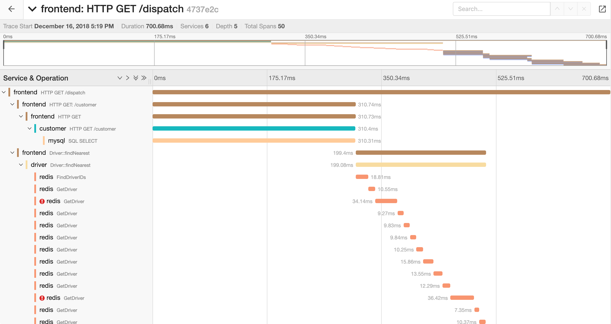
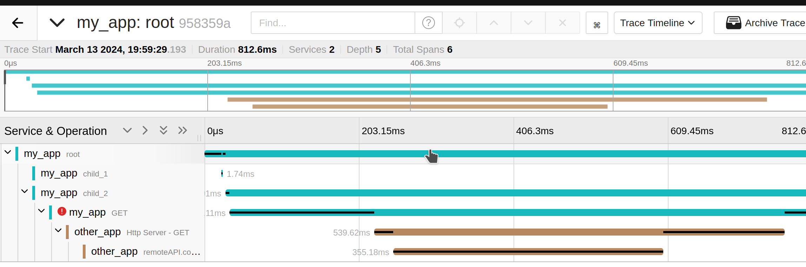

Who told you that?!
Deep dive into Context Propagation
Jacob Wang
London Scala User Group, 2024 March
Hello
- Software Developer
at

- https://mas.to/@jatcwang
Passing Context
- What do we mean by Context?
- E.g. Tenant ID, User ID, or anything else relevant for the current request
- May not be necessary to fulfill the request, but useful for debugging when things aren’t quite working!
java.lang.ThreadLocal
ThreadLocals
- Allow us to pass context without explicit parameters
- Java’s Mapped Diagnostic Context (MDC) and OpenTelemetry pass their context using ThreadLocal
- Can use
InheritableThreadLocalto pass on context to child threads- e.g. background tasks
The trouble with Threads
- Older HTTP libraries create a new thread per request
- But each thread has a base cost of ~1MB
- CPU Core switching between threads (“context switching”) is expensive
- Not web-scale
Let‚Äôs reuse threads! üí°
- Have a pool of threads and submit “tasks” (Runnable) to it
Runnable(equivalent to() => Unit) have much smaller overhead- “Async”
val threadpool = Executors.newFixedThreadPool(4)
threadpool.execute(() => {
println(s"step 1")
val x = "a"
threadpool.execute(() => {
println(s"step 2")
val y = x ++ "b"
threadpool.execute(() => {
println(s"complete! $y")
})
})
})- Java/Scala Futures, Effect runtimes (Cats-effect, ZIO) are all built on this
val threadpool = Executors.newFixedThreadPool(4) // 4 threads in pool
val CONTEXT = ThreadLocal.withInitial(() => "no user")
threadpool.execute(() => {
CONTEXT.set("user1")
println(s"${Thread.currentThread().getName}: step 1 for ${CONTEXT.get()}")
threadpool.execute(() => {
println(s"${Thread.currentThread().getName}: step 2 for ${CONTEXT.get()}")
threadpool.execute(() => {
println(s"${Thread.currentThread().getName}: complete for ${CONTEXT.get()}")
})
})
})pool-1-thread-1: step 1 for user1
pool-1-thread-2: step 2 for no_user
pool-1-thread-3: complete for no_user- We’ve lost the context because another thread executed step 2
- Worse, another unrelated task executing on thread 1 now has “user 1” as its context!
Making ThreadLocal work with Async
- üí° Capture ThreadLocal value in the submitting thread and set it when running in the new thread
class CurrentContextExecutor(delegate: Executor) extends Executor:
override def execute(task: Runnable): Unit =
val toAttach = CONTEXT.get() /*1*/ // T1
val wrappedTask = wrap(task, toAttach) // T1
delegate.execute(wrappedTask) // T1
def wrap(task: Runnable, toAttach: Context): Runnable =
() =>
try // T2
CONTEXT.set(toAttach) /*2*/ // T2
task.run() // T2
finally // T2
CONTEXT.remove /*3*/ // T2- Resurface the context we want to pass on
- Set the context we want to pass on
- Remove the ThreadLocal value
cats.effect.IOLocal
- With Cats-Effect, we can use
ThreadLocal+ Wrapping trick we just covered - But we have a better solution:
IOLocal IOLocalallow us to pass context through our fiber- Like
InheritableThreadLocal, child fibers inherit a copy of the parent’s context when forked - Not based on
ThreadLocal, need explicit extraction if calling code that needs it
cats.effect.IOLocal Example
class FiberTest(CONTEXT: IOLocal[Int]) {
def run(): IO[Unit] =
for {
_ <- CONTEXT.set(5)
fiber1 <- (for {
_ <- CONTEXT.get // = 5
_ <- CONTEXT.set(6)
_ <- CONTEXT.get // = 6
} yield ()).start
_ <- CONTEXT.get // = 5
_ <- CONTEXT.set(10)
_ <- fiber1.joinWithNever
_ <- CONTEXT.get // = 10
} yield ()
}What we’ve seen so far
ThreadLocal: Context passing for synchronous code- Thread pools: Need to extract and pass the context stored in ThreadLocal to the next executing thread
- In Cats-Effect, we can use
IOLocal(FiberRefin ZIO) to pass context - Now, let’s apply what we’ve learned today
OpenTelemetry - Quick Intro
- Distributed Tracing: A method of tracking application requests as they flow in a distributed system
- OpenTelemetry: An open standard for telemetry (Distributed Tracing, Metrics, etc)
- Span: A recorded unit of work
- Attributes include
parentSpanId,traceId,isErrorandduration
- Attributes include
- Trace: Links together a set of spans (same
traceId), so we can track the execution trace from start to finish across services.

Otel4s - OpenTelemetry for Scala
- Implementation of OTel for the Typelevel ecosystem
- Follows OTel terminology and specification, but does not directly use OpenTelemetry-Java types
- Uses OpenTelemetry-Java as backend (e.g. reporting spans)
OpenTelemetry - Instrumentation API concepts
Context: The OpenTelemetry context. Key-value pairs for storing all OTel-related objects- The
Contextobject itself is propagated around (e.g. ThreadLocal, IOLocal) - e.g. 
Spanobject is stored inContext val context = Map( SPAN_KEY -> Span(traceId, spanId, ...), BAGGAGE_KEY -> Baggage(..) )
- The
Tracer: Use to create spans
Otel4s - Let’s get started!
import cats.effect._
import cats.implicits.*
import org.typelevel.otel4s.oteljava.context.Context
import org.typelevel.otel4s.oteljava.OtelJava
import org.typelevel.otel4s.trace.Tracerfor
otel4s <- OtelJava.global[IO] // Setup OTel using java's GlobalOpenTelemetry
given Tracer[IO] <- otel4s.tracerProvider.get("my_app")
_ <- Tracer[IO].span("root").surround( // Start a span, surrounding an IO
for
_ <- Tracer[IO].span("child_1").surround(
IO.println("work work")
)
_ <- Tracer[IO].span("child_2").surround(
Tracer[IO].span("grandchild_1").surround(
IO.println("more work done")
)
)
yield ()
)
yield ()Integrating with java libraries
- In Cats Effect, we use IOLocal to propagate context, but java libs use
ThreadLocal - üí° Extract
Contextfrom IOLocal and set it up in ThreadLocal before calling the java code
import cats.mtl.Local
import io.opentelemetry.context.Context as JContext // Context type from Java OTel
def blockingWithContext[A](use: => A)(using local: Local[IO, Context]): IO[A] =
local.ask.flatMap { (ctx: Context) =>
IO.blocking {
val jContext: JContext = ctx.underlying
val scope = jContext.makeCurrent() // Set the ThreadLocal
try
use
finally
scope.close() // Unset the ThreadLocal
}
}Integrating with java libraries - Example
- From a CE app, Use
java.net.http.HttpClientto call another service - HTTP request should propagate the trace via HTTP headers
import io.opentelemetry.instrumentation.httpclient.JavaHttpClientTelemetry
for
otel4s <- OtelJava.global[IO]
given Tracer[IO] <- otel4s.tracerProvider.get("my_app")
given Local[IO, Context] = otel4s.localContext
httpClient = HttpClient.newBuilder().build()
instrumentedHttpClient = JavaHttpClientTelemetry
.builder(GlobalOpenTelemetry.get())
.build()
.newHttpClient(httpClient)
myService = MyService(instrumentedHttpClient)
_ <- myService.doWorkAndMakeRequest
yield ()Local[IO, Context]instance allows services to extract OTel Context stored inIOLocal
Integrating with java libraries - Example
```mdoc scala:silent class MyService( javaHttpClient: HttpClient )(using Local[IO, Context], Tracer[IO]): def doWorkAndMakeRequest: IO[Unit] = withSpan(“root”)(for _ <- withSpan(“child_1”)(IO.println(“work work”))
_ <- withSpan("child_2")(for
req <- IO(HttpRequest.newBuilder()
.uri(new URI("http://localhost:8080/example"))
.GET()
.build())
_ <- withSpan("grandchild_1")(blockingWithContext {
javaHttpClient.send(req, BodyHandlers.ofString)
}.flatMap(resp => IO.println(resp.body())))
_ <- withSpan("grandchild_2")(IO.println("more work"))
yield ())
yield ())```

FIXME
FIXME: Specify https://github.com/typelevel/cats-effect/pull/3636 somewhere FIXME: io.opentelemetry.context.Context.taskWrapping to wrap an ExecutorService to propagate across async boundaries
The (Near) Future
- With Virtual Threads (Java 21+) and ScopedValues